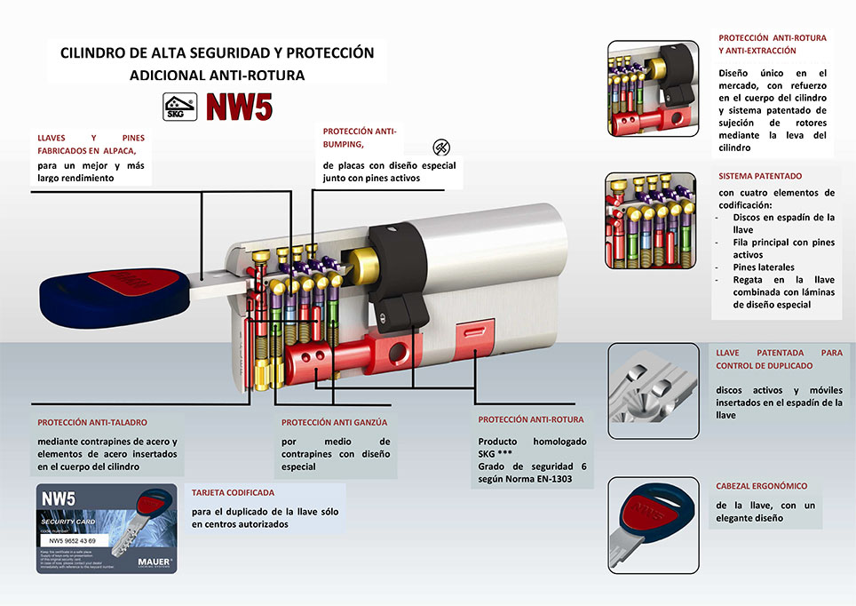

Mauer
Mauer NW5
Cilindro de alta seguridad de Mauer
El cilindro de más prestaciones de Mauer: más de 1.500 kg de resistencia a la extracción, insertos endurecidos antitaladro y más de 20 millones de combinaciones.
- > 1.500 kg
- Resistencia a la extracción
- + 400 °C
- Resistencia al fuego
- 20 millones
- Combinaciones


Arrastra la llave para meterla o sacarla. Metida hasta el fondo, arrástrala de lado para girarla.
Contra qué te protege
Según la ficha de Mauer.
- BumpingNo lo indica la ficha
- GanzúaNo lo indica la ficha
- ImpresiónNo lo indica la ficha
- Taladro
- Extracción y rotura
- Copias de llave
Así está hecho por dentro
Baja para verlo por dentro, pieza a pieza.
DeslizaMauer NW5
El cilindro de más prestaciones de Mauer, con más de 20.000.000 de combinaciones.
Más de 100.000 aperturas
Pines y llaves en alpaca de alta resistencia, para más de 100.000 ciclos de apertura.
Antitaladro
Insertos endurecidos en el frontal y múltiples pernos de acero que frenan el taladro.
Más de 1.500 kg
Leva antiextracción: resiste más de 1.500 kg según la normativa europea más exigente. Y aguanta el fuego a más de 400 °C.
Llave patentada
Construcción patentada de la llave y tarjeta de código de seguridad para controlar las copias y evitar duplicados ilegales.
Una llave para varias puertas
Se puede amaestrar e igualar: la misma llave para casa y trastero, o una llave maestra para varias puertas.
Todas las características
Tal como las da Mauer.
- Creado conforme a las más nuevas e innovadoras tecnologías.
- Resistencia > 1500 Kg a la extracción según la normativa europea más exigente.
- Resistencia al fuego + 400°C.
- Construcción patentada de la llave.
- Más de 20.000.000 de permutaciones.
- Leva anti-extracción logrando una resistencia extrema.
- Insertos endurecidos en el frontal y múltiples pernos de acero antitaladro.
- Tarjeta de código seguridad para evitar duplicados ilegales de llave consiguiendo control total de las copias.
- Alta resistencia de los materiales con más de 100.000 ciclos de apertura (pines y llaves en alpaca).
- Posibilidad de amaestramiento e igualamiento.

Otros cilindros
-
 Mauer
MauerNW4 CABMA
De serie en: Thor 20 Plus, Thor 20, iDOM- De serie en Thor 20, Thor 20 Plus e iDOM
- Antibumping, antiganzúa y antiimpresión
- Llave con pin móvil y regata, y tarjeta de seguridad
-
 Mauer
MauerElite 2 Red Line
De serie en: Eco-Thor, Puerta de trastero- De serie en Eco-Thor y trastero
- Antibumping, antiganzúa y antitaladro
- Llave patentada y tarjeta de seguridad
-
 Keso
Keso8000 Omega2 Master
De serie en: Premium 5C, Premium 4C, Premium 3C- De serie en las Premium 5C, 4C y 3C
- Antibumping real con el sistema Omega2
- Llave incopiable, también con impresora 3D
¿Quieres este cilindro en tu puerta?
Te decimos si encaja en tu puerta, lo montamos en cualquier punto de Asturias y te entregamos las llaves con su tarjeta.
- Dónde estamos
- Camino de la Xacona, 40
33392 Gijón (Asturias) - Teléfono
- 985 053 052
 Pulsa para ver la ruta
Pulsa para ver la ruta